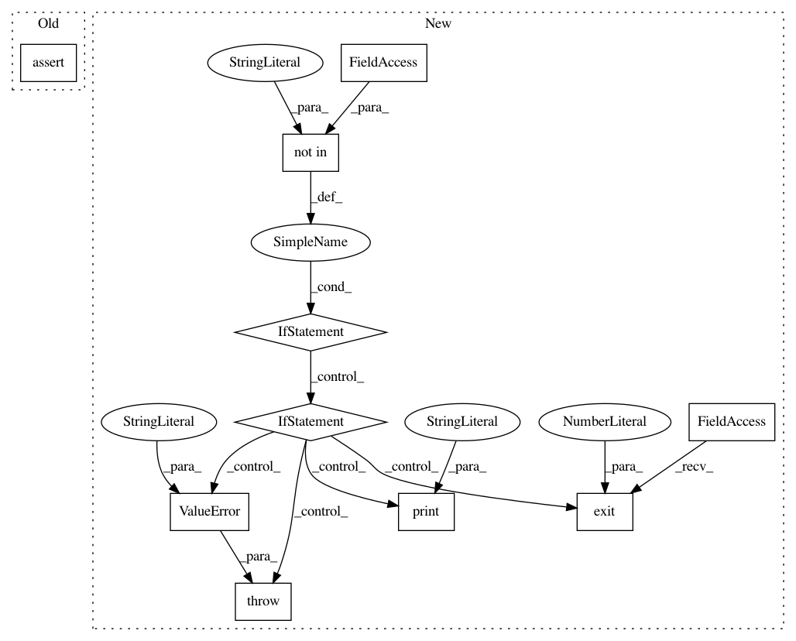

55ae567f7a4c6213543d002b42270569454b5378,python/ray/tune/examples/sigopt_example.py,,,#,28
Before Change
import argparse
import os
assert "SIGOPT_KEY" in os.environ, \
"SigOpt API key must be stored as environment variable at SIGOPT_KEY"
parser = argparse.ArgumentParser()
parser.add_argument(
"--smoke-test", action="store_true", help="Finish quickly for testing")
After Change
"--smoke-test", action="store_true", help="Finish quickly for testing")
args, _ = parser.parse_known_args()
if "SIGOPT_KEY" not in os.environ:
if args.smoke_test:
print("SigOpt API Key not found. Skipping smoke test.")
sys.exit(0)
else:
raise ValueError(
"SigOpt API Key not found. Please set the SIGOPT_KEY "
"environment variable.")
space = [
{
"name": "width",
"type": "int",
In pattern: SUPERPATTERN
Frequency: 3
Non-data size: 10
Instances
Project Name: ray-project/ray
Commit Name: 55ae567f7a4c6213543d002b42270569454b5378
Time: 2020-12-18
Author: krfricke@users.noreply.github.com
File Name: python/ray/tune/examples/sigopt_example.py
Class Name:
Method Name:
Project Name: ray-project/ray
Commit Name: 55ae567f7a4c6213543d002b42270569454b5378
Time: 2020-12-18
Author: krfricke@users.noreply.github.com
File Name: python/ray/tune/examples/sigopt_prior_beliefs_example.py
Class Name:
Method Name:
Project Name: ray-project/ray
Commit Name: 55ae567f7a4c6213543d002b42270569454b5378
Time: 2020-12-18
Author: krfricke@users.noreply.github.com
File Name: python/ray/tune/examples/sigopt_multi_objective_example.py
Class Name:
Method Name: